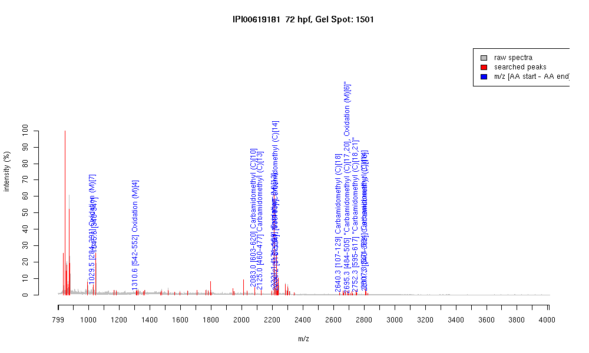

| Name | PREDICTED: similar to zinc finger protein 585B |
|---|---|
| MW | 75720.3 |
| PI | 9.06 |
| Mascot Protein Score | 79 |
| Masses (matched / unmatched) | 14 / 59 |

| Peptide | MZ (calc) | MZ (observed) | Error (DA) | Error (PPM) | Start | Stop | Modifications |
|---|---|---|---|---|---|---|---|
| QNLKDHMK | 1029.5146 | 1029.5153 | 0.0007 | 1 | 284 | 291 | Oxidation (M)[7] |
| QYLTDHLR | 1045.5425 | 1045.5625 | 0.02 | 19 | 340 | 347 | |
| ADHMRLHTGEK | 1310.627 | 1310.6381 | 0.0111 | 8 | 542 | 552 | Oxidation (M)[4] |
| VHSGEKPFTCDQCGKSFR | 2082.9482 | 2083.0073 | 0.0591 | 28 | 603 | 620 | Carbamidomethyl (C)[10] |
| VHIGEEPYTKFTCQQCGK | 2124.9841 | 2125.0361 | 0.052 | 24 | 460 | 477 | Carbamidomethyl (C)[13] |
| VHTGEKPFTLNIMKMAFIK | 2221.1873 | 2221.1177 | -0.0696 | -31 | 171 | 189 | Oxidation (M)[13] |
| EHIKVHTGETPYTCHQCGK | 2225.0227 | 2225.1172 | 0.0945 | 42 | 83 | 101 | Carbamidomethyl (C)[14] |
| VHTGEKPHICPQCGKSFTQK | 2225.0955 | 2225.1172 | 0.0217 | 10 | 115 | 134 | |
| SHMIIHSGEKPYACQICGKK | 2230.093 | 2230.1758 | 0.0828 | 37 | 515 | 534 | |
| QNLTDHIKVHTGEKPHICPQCGK | 2640.3132 | 2640.2908 | -0.0224 | -8 | 107 | 129 | Carbamidomethyl (C)[18] |
| NLEVHMRIHTGEKPFTCQHCGK | 2695.2649 | 2695.2712 | 0.0063 | 2 | 484 | 505 | "Carbamidomethyl (C)[17,20], Oxidation (M)[6]" |
| VHLEQHMKVHSGEKPFTCDQCGK | 2752.2751 | 2752.2969 | 0.0218 | 8 | 595 | 617 | "Carbamidomethyl (C)[18,21]" |
| SHLIIHSGEKPYSCQQCQSTFTQK | 2807.324 | 2807.2966 | -0.0274 | -10 | 571 | 594 | Carbamidomethyl (C)[14] |
| QYLTDHLRIHTGEKPYTCQYCGK | 2811.334 | 2811.2849 | -0.0491 | -17 | 340 | 362 | Carbamidomethyl (C)[18] |